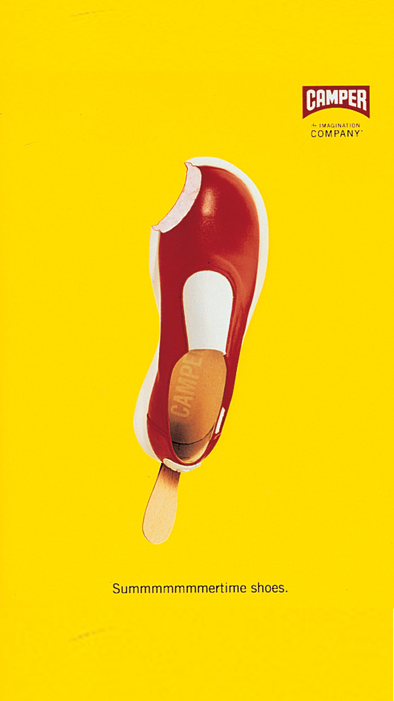

홈 > 브랜드 매거진 > 캠퍼
캠퍼
캠퍼(Camper)는 1975년 로렌소 플룩사가 스페인 마요르카에서 설립한 신발 브랜드다. 마요르카의 전통 제화 공예를 바탕으로 편안함과 개성 있는 디자인을 결합한 컨템포러리 풋웨어로 알려져 있다.
산업 분야 패션·럭셔리 · 공개 등급 편집 검수 · 브랜드 평가 4.7 ★


한눈에 보는 브랜드
캠퍼(Camper)는 1975년 로렌소 플룩사가 스페인 마요르카에서 설립한 신발 브랜드다. 마요르카의 전통 제화 공예를 바탕으로 편안함과 개성 있는 디자인을 결합한 컨템포러리 풋웨어로 알려져 있다.
브랜드 관점
캠퍼는 마요르카 장인 전통과 유희적 디자인을 결합해 컨템포러리 풋웨어 시장에서 독자적 위치를 가진다. 헤리티지, 핵심 제품, 모회사 구조를 함께 보면 패션·럭셔리 안에서의 위치가 또렷해진다.
시작과 성장
캠퍼는 1877년 안토니오 플룩사가 마요르카 섬에 최초로 재봉틀을 선보이고, 이를 신발 제조 공정에 사용하면서 시작됐다. 1975년 안토니오의 손자인 로렌조 플룩사가 가업을 '캠퍼(Camper)'로 브랜드화하였다.
이후 캠퍼는 편안한 착화감과 고정관념을 깨는 독특한 디자인으로 알려졌고, 약 50개국에 진출한 글로벌 브랜드로 성장하였다.
브랜드 아이덴티티
캠퍼는 브랜드 철학으로 지중해 지역의 다양성과 자유로움, 지속가능성, 기능성과 심미성의 조합을 추구한다. 캠퍼는 고정관념을 뛰어넘은 독특한 디자인을 친환경적인 재료와 공정을 통해 구현하며, 편안한 착화감을 통해 걷는 문화를 정착시키기 위해 노력하고 있다.
확장 지식
스페인 마요르카 인카에 기반한 가족경영 브랜드로, 전 세계 약 400개 매장을 운영한다.
제품과 서비스
캐주얼 신발을 중심으로 부츠·스니커즈·액세서리를 전개한다. Pelotas, Twins 등 아이코닉 라인과 호텔(Casa Camper)로 브랜드를 확장했다.
사람들
창업자는 로렌소 플룩사(Lorenzo Fluxà)로, 마요르카의 제화 가문 출신이다.
현재 상태
타임라인
BI/CI 변천사
함께 읽을 브랜드
 패션·럭셔리 · 편집 검수디젤
패션·럭셔리 · 편집 검수디젤디젤(Diesel)은 1978년 렌조 로소가 이탈리아 브레간체에서 설립한 데님 중심의 컨템포러리 패션 브랜드다. 도발적이고 실험적인 디자인으로 데님 헤리티지를 재해석...
 패션·럭셔리 · 매거진 완성루이비통
패션·럭셔리 · 매거진 완성루이비통루이비통은 여행가방에서 출발했지만, 이동의 기능을 럭셔리한 삶의 상징으로 확장했다. 브랜드의 헤리티지는 물건을 담는 도구가 아니라 이동하는 사람의 취향과 지위를 표현...
 패션·럭셔리 · 매거진 완성몽블랑
패션·럭셔리 · 매거진 완성몽블랑몽블랑은 필기구를 기록의 도구에서 성취와 품격의 상징으로 끌어올린 브랜드다. 만년필은 기능 제품이지만, 브랜드가 축적한 이미지는 서명, 의사결정, 지적 권위 같은 장...
패션·럭셔리 · 매거진 완성빅토리아 시크릿빅토리아 시크릿은 속옷을 기능적 제품이 아니라 무대화된 판타지와 자기표현의 이미지로 포장한 브랜드다. 브랜드는 제품보다 쇼, 모델, 시각적 연출을 통해 소비자가 상상...
 패션·럭셔리 · 매거진 완성코치
패션·럭셔리 · 매거진 완성코치코치는 실용적 가죽 제품을 일상적 럭셔리의 영역으로 끌어올린 브랜드다. 과시적 명품보다 접근 가능한 품질과 라이프스타일 이미지를 통해 오래 쓰는 가방의 감각을 브랜드...
패션·럭셔리 · 매거진 완성프라다프라다는 아름다움을 익숙한 화려함보다 지적인 긴장감으로 표현하는 브랜드다. 소재와 형태, 절제된 색감은 패션을 단순한 장식이 아니라 관찰과 해석의 대상으로 만든다.
 패션·럭셔리 · 편집 검수누디진
패션·럭셔리 · 편집 검수누디진누디진(Nudie Jeans)은 raw 데님과 무상 수선·재활용을 핵심으로 하는 스웨덴의 친환경 청바지 브랜드이다.
 패션·럭셔리 · 편집 검수버버리
패션·럭셔리 · 편집 검수버버리버버리(Burberry)는 1856년 설립된 영국의 럭셔리 패션 하우스이다.